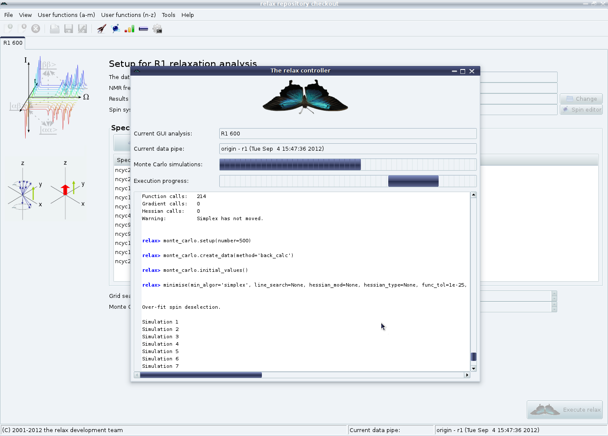
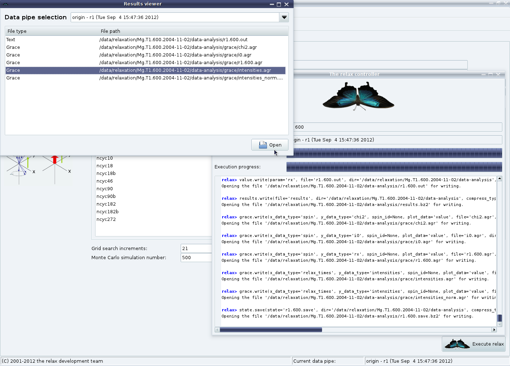

Next: Final checks of the Up: The relaxation curve-fitting auto-analysis Previous: Relax-fit GUI mode - Contents Index
Back in the main R1 analysis tab, the grid search increments and number of Monte Carlo simulations can be changed. The default values of 21 grid search increments and 500 MC simulations are optimal - lower values are not recommended. To perform the optimisation and error analysis, click on the ``Execute relax'' button. The relax controller will open to show you the progress of the optimisation and simulations:
|

|
Once finished, the ``Results viewer'' window will also appear:
|

|
This window can be used to open the text files in the default text editor for your operating system or the 2D Grace plots in xmgrace if available on your system.